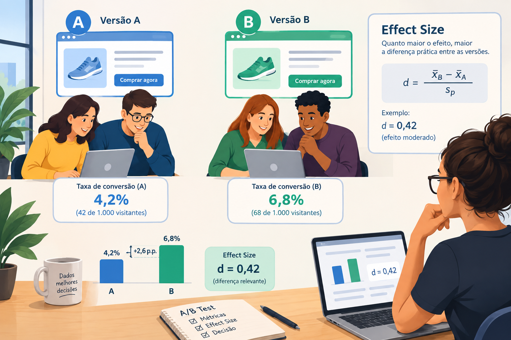
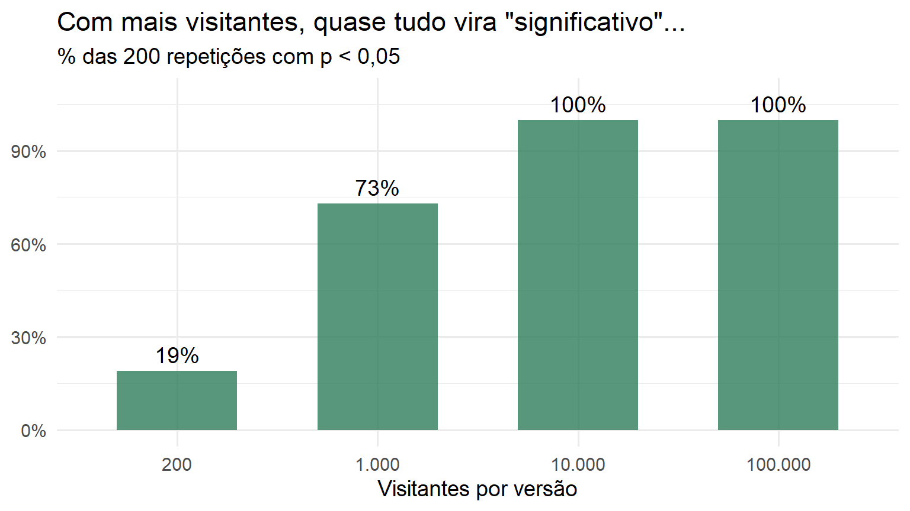
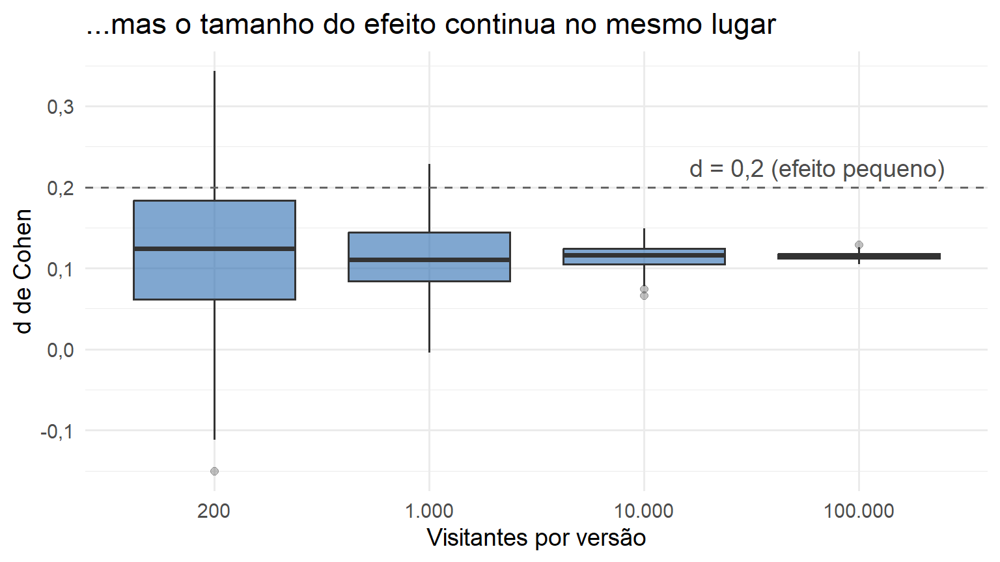

Deu p < 0,05 no Teste A/B. E Agora, Vale a Pena Mudar o Site?
r-code
teste a/b
tamanho do efeito
valor de p
marketing analytics
alfabetização de dados
data literacy
estatística
Author
Jobenil Júnior
Published
October 3, 2026
O time de marketing chega na reunião empolgado: “A nova versão da página converteu 6,8% contra 4,2% da antiga, e o teste deu p = 0,01! Bora trocar o site inteiro?” Calma. O valor de p contou que a diferença provavelmente não é obra do acaso. Mas ele não disse se essa diferença é grande, e muito menos se ela paga o redesign. Para responder isso, precisamos chamar outro personagem para a conversa: o tamanho do efeito (effect size).

🧸 Imagine assim:
Pense no valor de p como um detector de fumaça. Ele apita quando há sinal de fogo, mas apita do mesmo jeito para uma vela acesa e para a cozinha pegando fogo. Já o tamanho do efeito é o termômetro: ele diz quão quente está a situação.
Outra imagem que gosto de usar em sala: uma balança de farmácia superprecisa consegue detectar que você “engordou” 5 gramas depois do almoço. A diferença é real (estatisticamente significativa, digamos assim), mas não muda em nada a sua dieta (não tem significância prática).
O valor de p responde “foi sorte?”. O tamanho do efeito responde “quão grande?”. E só o contexto do negócio responde “vale a pena?”.
🔍 O que o valor de p realmente diz (e o que ele não diz)
O valor de p é uma probabilidade condicional: a chance de observarmos um resultado igual ou mais extremo do que o obtido na amostra, supondo que a hipótese nula (\(H_0\)) seja verdadeira. No nosso Teste A/B, \(H_0\) diz que as duas versões convertem igual.
Três interpretações erradas que vejo com frequência, inclusive em relatórios profissionais:
O valor de p não é a probabilidade de \(H_0\) ser verdadeira.
O valor de p não é a probabilidade de a versão B ser melhor.
“Estatisticamente significativo” não é sinônimo de “importante” ou “relevante”.
E tem um detalhe que pesa muito em marketing digital: o valor de p depende diretamente do tamanho da amostra (\(N\)). Com milhões de visitantes, qualquer diferençazinha irrelevante vira “significativa”. Um exemplo clássico vem da medicina: o estudo sobre a aspirina na prevenção do infarto, com mais de 22.000 participantes, encontrou \(p < 0,00001\), mas com uma redução absoluta do risco de apenas 0,77% (\(r^2 = 0,001\)) (Sullivan & Feinn, 2012). O efeito existe, mas é pequeno. No sentido oposto, com amostras pequenas um efeito real e expressivo pode não atingir significância por falta de poder estatístico (o famoso Erro do Tipo II).
⚖️ Significância estatística vs. significância prática
Característica
Significância Estatística
Significância Prática
Pergunta central
A diferença entre A e B é fruto do acaso?
Quão grande é essa diferença no mundo real?
Métrica principal
Valor de p
Tamanho do efeito (d, h, lift, R$)
Sensibilidade ao N
Altíssima
Praticamente nenhuma
Para que serve
Rejeitar (ou não) \(H_0\)
Avaliar o impacto e tomar a decisão
📏 Entra o d de Cohen
O d de Cohen mede a distância entre duas médias em unidades de desvio padrão:
\[d = \frac{\bar{x}_B - \bar{x}_A}{s_p}\]
em que \(s_p\) é o desvio padrão agrupado (pooled) dos dois grupos. Os pontos de corte tradicionais propostos por Jacob Cohen (1988) são:
d
Interpretação clássica
0,2
Efeito pequeno (existe, mas é modesto)
0,5
Efeito médio (visível a olho nu por um observador atento)
0,8
Efeito grande (diferença substancial entre os grupos)
Uma leitura bem intuitiva: com \(d = 0,8\), a média do grupo tratado fica no percentil 79 do grupo controle. Para amostras pequenas (\(n < 50\)), o g de Hedges corrige o viés de inflação do d.
Agora, um detalhe técnico importante para quem trabalha com CRO: conversão é uma variável binária (converteu = 1, não converteu = 0). Dá para calcular o d sobre esses zeros e uns, mas a medida “natural” de Cohen para comparar proporções é o hde Cohen:
\[h = 2\arcsin\sqrt{p_B} - 2\arcsin\sqrt{p_A}\]
Ele usa os mesmos pontos de corte (0,2 / 0,5 / 0,8) e, como veremos, para taxas baixas como as de conversão, d e h ficam praticamente iguais.
🧪 Simulando o nosso Teste A/B no R
Vamos reproduzir exatamente o cenário da imagem: 1.000 visitantes em cada versão, com 42 conversões na versão A e 68 na versão B. Os dados são gerados visitante a visitante, como sairiam de uma ferramenta de experimentação.
library(dplyr)library(tidyr)library(purrr)library(ggplot2)library(effectsize)library(pwr)# Função auxiliar para exibir números no padrão brasileiro (vírgula decimal)br <-function(x, digitos =2) {format(round(x, digitos), nsmall = digitos, decimal.mark =",", big.mark =".")}set.seed(2026)teste_ab <-tibble(versao =rep(c("A", "B"), each =1000),converteu =c(sample(rep(c(1, 0), times =c(42, 958))),sample(rep(c(1, 0), times =c(68, 932)))))resumo <- teste_ab |>group_by(versao) |>summarise(visitantes =n(),conversoes =sum(converteu),taxa =mean(converteu))resumo
# A tibble: 2 × 4
versao visitantes conversoes taxa
<chr> <int> <dbl> <dbl>
1 A 1000 42 0.042
2 B 1000 68 0.068
Cada linha da base é um visitante, e a coluna converteu vale 1 se ele comprou. O resumo confirma as taxas de 4,2% e 6,8%: uma diferença de 2,6 pontos percentuais, ou um lift relativo de 62%. Para o time de marketing, parece um golaço. Vamos ver o que a estatística tem a dizer.
📊 Passo 1: o valor de p
teste_p <-prop.test(x =c(68, 42), n =c(1000, 1000), correct =FALSE)teste_p
2-sample test for equality of proportions without continuity correction
data: c(68, 42) out of c(1000, 1000)
X-squared = 6.5031, df = 1, p-value = 0.01077
alternative hypothesis: two.sided
95 percent confidence interval:
0.006049531 0.045950469
sample estimates:
prop 1 prop 2
0.068 0.042
O teste de duas proporções retorna \(\chi^2 \approx 6,50\) e p ≈ 0,011. Se as duas versões convertessem igual, só veríamos uma diferença tão grande quanto essa (ou maior) em cerca de 1% das repetições do experimento. Conclusão: é pouco provável que tenha sido sorte. O intervalo de confiança de 95% para a diferença vai de 0,6 a 4,6 pontos percentuais, ou seja, a versão B parece mesmo melhor, mas o tamanho real do ganho ainda é bastante incerto.
Até aqui, o detector de fumaça apitou. Agora vamos ao termômetro.
📐 Passo 2: o tamanho do efeito
conv_A <- teste_ab$converteu[teste_ab$versao =="A"]conv_B <- teste_ab$converteu[teste_ab$versao =="B"]# d de Cohen "na mão"s_p <-sqrt((var(conv_A) +var(conv_B)) /2)d_manual <- (mean(conv_B) -mean(conv_A)) / s_pd_manual
[1] 0.1141737
# d de Cohen com o pacote effectsize (com IC 95%)cohens_d(conv_B, conv_A)
Cohen's d | 95% CI
------------------------
0.11 | [0.03, 0.20]
- Estimated using pooled SD.
# h de Cohen, a medida própria para proporçõesh <-ES.h(0.068, 0.042)h
[1] 0.1148327
Os três cálculos contam a mesma história: d ≈ 0,11 e h ≈ 0,11. Pela régua de Cohen, isso é um efeito pequeno, abaixo até mesmo do limiar de 0,2. Em termos de percentil, o “visitante médio” da versão B fica só no percentil 55 da versão A (sem efeito nenhum seria o percentil 50).
Então temos um resultado estatisticamente significativo, com um efeito pequeno na régua clássica e um lift de 62% na taxa de conversão. Parece contraditório? Não é. É exatamente por isso que uma métrica sozinha não resolve.
🕵️ Pegadinha: a imagem está certa?
Volte lá na imagem que abre este post. Ela informa, com toda a confiança, d = 0,42 (efeito moderado). Acabamos de calcular, com os mesmos 42/1.000 e 68/1.000 da imagem, um d de aproximadamente 0,11. Quase quatro vezes menor!
E quanto a versão B precisaria converter para que o efeito fosse mesmo de 0,42? Basta “desfazer” a fórmula do h:
A versão B teria que converter cerca de 16,4%, e não 6,8%, para justificar o número estampado na imagem.
Número bonito em infográfico não é resultado de análise. Antes de levar um “d = 0,42” para a diretoria, refaça a conta. Isso, para mim, é a alfabetização de dados na veia!
💰 Passo 3: o efeito paga o redesign?
Aqui está a pergunta que o negócio realmente quer responder. Lembra que os pontos de corte de Cohen foram pensados para as ciências do comportamento, e não para o seu e-commerce? Um efeito “pequeno” em uma métrica de conversão pode valer muito dinheiro, e o oposto também é verdade. A forma honesta de decidir é traduzir o efeito para reais.
Vamos imaginar duas lojas que rodaram exatamente o mesmo teste, com o mesmo resultado. O redesign + infraestrutura custa R$ 40.000, o ticket médio é R$ 180 e a margem é de 30% (lucro de R$ 54 por venda). A diferença entre elas é o tráfego: a loja grande recebe 50.000 visitantes por mês, a loja pequena recebe 3.000. Para levar a incerteza em conta, usamos o intervalo de confiança da diferença (cenários pessimista e otimista).
Olha que interessante: o mesmo efeito, com o mesmo d “pequeno”, leva a decisões completamente diferentes.
Na loja grande, mesmo no cenário pessimista o redesign se paga em poucos meses. Decisão fácil: implementar.
Na loja pequena, a estimativa pontual leva quase dez meses para pagar o investimento e, no cenário pessimista, mais de três anos. Talvez valha mais testar mudanças mais baratas ou esperar mais dados.
O d de Cohen diz quanto as versões se distanciam. Quem decide se essa distância vale o investimento é o tráfego, a margem e o custo do projeto.
🎲 E se a amostra fosse outra?
Agora o argumento mais importante do post. Vamos manter as mesmas taxas verdadeiras (4,2% e 6,8%) e repetir o experimento 200 vezes para cada tamanho de amostra: 200, 1.000, 10.000 e 100.000 visitantes por versão.
simulacoes <- simulacoes |>mutate(tamanho =factor(scales::number(n, big.mark ="."),levels = scales::number(c(200, 1000, 10000, 100000), big.mark =".")))simulacoes |>group_by(tamanho) |>summarise(prop_significativo =mean(p_valor <0.05)) |>ggplot(aes(x = tamanho, y = prop_significativo)) +geom_col(fill ="#2E7D5B", alpha =0.8, width =0.6) +geom_text(aes(label = scales::percent(prop_significativo, accuracy =1)),vjust =-0.5, size =5) +scale_y_continuous(labels = scales::percent, limits =c(0, 1.08)) +labs(title ="Com mais visitantes, quase tudo vira \"significativo\"...",subtitle ="% das 200 repetições com p < 0,05",x ="Visitantes por versão", y =NULL) +theme_minimal(base_size =14)

ggplot(simulacoes, aes(x = tamanho, y = d)) +geom_boxplot(fill ="#2B6CB0", alpha =0.6, outlier.alpha =0.3) +geom_hline(yintercept =0.2, linetype ="dashed", colour ="grey40") +annotate("text", x =4.4, y =0.2, label ="d = 0,2 (efeito pequeno)",vjust =-0.6, hjust =1, colour ="grey30") +labs(title ="...mas o tamanho do efeito continua no mesmo lugar",x ="Visitantes por versão", y ="d de Cohen") +scale_y_continuous(labels = scales::label_number(decimal.mark =",")) +theme_minimal(base_size =14)

A tabela e os dois gráficos resumem nosso ponto de vista:
Com 200 visitantes por versão, o teste só dá significativo em cerca de 19% das repetições, mesmo existindo uma diferença real. É o Erro do Tipo II em ação.
Com 1.000 visitantes, como no nosso teste, a taxa sobe para 73%. Ou seja, o nosso “p = 0,01” teve uma boa dose de sorte: em cerca de uma a cada quatro repetições, o mesmo experimento não teria dado significativo.
Com 10.000 ou 100.000 visitantes, o teste dá significativo em 100% das vezes, e o valor de p mediano chega a números absurdos, como 10-144 (sim, 143 zeros depois da vírgula).
Enquanto isso, o dde Cohen fica estacionado perto de 0,11 em todos os cenários. A amostra maior só deixa a estimativa mais precisa (as caixas ficam mais estreitas).
O valor de p mede, ao mesmo tempo, o tamanho do efeito e o tamanho da amostra. O tamanho do efeito mede só o efeito. Por isso os dois precisam andar juntos no relatório.
🧮 Bônus: quantos visitantes eu preciso antes de começar?
O melhor momento para pensar em tamanho do efeito é antes de ligar o teste. Se sabemos qual é o menor ganho que valeria a pena para o negócio, conseguimos calcular quantos visitantes são necessários para detectá-lo com segurança. O padrão é buscar um poder estatístico de 80% (\(1 - \beta \geq 0,80\)) com \(\alpha = 0,05\):
poder <-pwr.2p.test(h =ES.h(0.068, 0.042), sig.level =0.05, power =0.80)poder
Difference of proportion power calculation for binomial distribution (arcsine transformation)
h = 0.1148327
n = 1190.435
sig.level = 0.05
power = 0.8
alternative = two.sided
NOTE: same sample sizes
Para detectar um salto de 4,2% para 6,8% com 80% de poder, precisamos de aproximadamente 1.191 visitantes por versão. O nosso teste, com 1.000, ficou abaixo disso. E qual era o poder real dele?
poder_real <-pwr.2p.test(h =ES.h(0.068, 0.042), n =1000, sig.level =0.05)$powerpoder_real
[1] 0.7283339
Cerca de 73%, praticamente o mesmo valor dos 73% que a simulação mostrou. O resultado apareceu, mas o experimento estava subdimensionado. Se a meta fosse detectar um ganho ainda menor, digamos de 4,2% para 5,0%, a conta mudaria bastante:
n_ganho_menor <-ceiling(pwr.2p.test(h =ES.h(0.050, 0.042), sig.level =0.05, power =0.80)$n)n_ganho_menor
[1] 10744
Seriam 10.744 visitantes por versão. Quanto menor o efeito que você quer enxergar, maior a amostra de que precisa.
Planejar o tamanho da amostra evita os dois desperdícios clássicos: parar o teste cedo demais e “não achar nada”, ou deixá-lo rodando por meses para comprovar uma diferença que não muda a vida de ninguém.
🎯 Em resumo:
Pergunta
Métrica
Resposta no nosso exemplo
A diferença foi sorte?
Valor de p
Provavelmente não (p ≈ 0,01)
Quão grande é a diferença?
d / h de Cohen + IC 95%
Pequena na régua clássica (≈ 0,11), mas +62% de lift
O número da imagem confere?
Refazer a conta
Não: d ≈ 0,11, e não 0,42
Vale a pena implementar?
Lucro incremental e payback
Depende do tráfego: sim na loja grande, talvez não na pequena
Quantos visitantes eu precisava?
Poder estatístico
Cerca de 1.200 por versão (com 1.000, o poder era de ~73%)
Estatisticamente significativo não é sinônimo de importante. Reporte sempre o valor de p e o tamanho do efeito, com intervalo de confiança, e julgue a relevância dentro do contexto do seu negócio.
Da próxima vez que alguém chegar com um “deu p < 0,05, pode trocar o site!”, você já sabe quais são as três perguntas seguintes: quão grande é o efeito, qual é a incerteza dessa estimativa e quanto ela vale em reais. Testem esses códigos com os dados dos seus próprios experimentos e mandem as dúvidas no nosso WhatsApp. Obrigado pela leitura!
Referências
Cohen, J. (1988). Statistical Power Analysis for the Behavioral Sciences (2ª ed.). Lawrence Erlbaum.
Sullivan, G. M., & Feinn, R. (2012). Using Effect Size, or Why the P Value Is Not Enough. Journal of Graduate Medical Education, 4(3), 279–282.
Wasserstein, R. L., & Lazar, N. A. (2016). The ASA Statement on p-Values: Context, Process, and Purpose. The American Statistician, 70(2), 129–133.
EDA | TESTE T | ENQUETES | ANOVA | MODELOS DE REGRESSÃO | ANÁLISE FATORIAL | MODELAGEM DE EQUAÇÕES ESTRUTURAIS | TRI | RASCH MODELS | MACHINE LEARNING